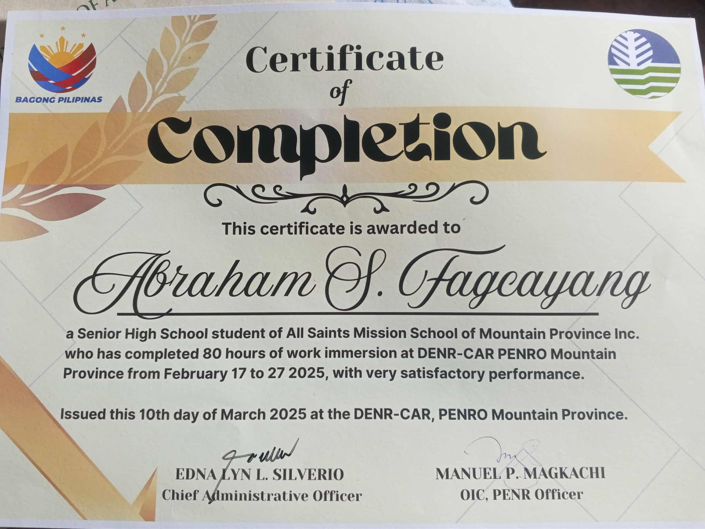
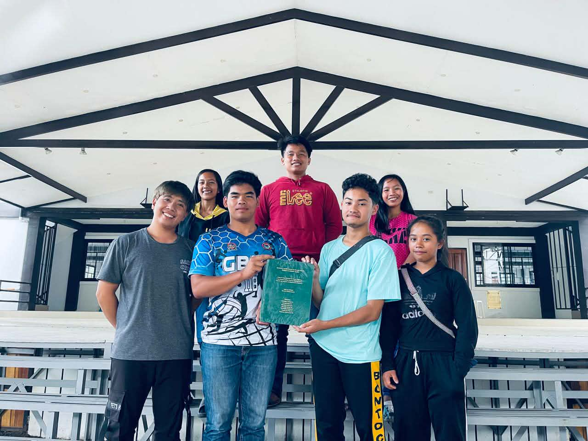
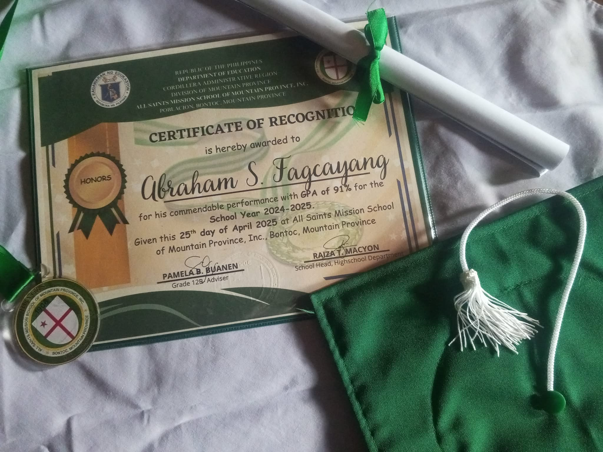

My Works & Projects
A collection of my academic projects, immersion work, and design concepts showcasing my skills and growth in IT.

Event Documentation System (DENR Immersion)
During my immersion at the Department of Environment and Natural Resources (DENR), I assisted in organizing and documenting official events attended by staff. This involved structuring records, maintaining accuracy, and ensuring accessibility of information.
View Image
Academic Research: Chaw-es Ritual Study
A research project focused on the traditional Chaw-es ritual in Anabel, exploring its cultural significance and how it survives in modern times. This project enhanced my research, documentation, and analytical skills.
View DocumentCCNA Introduction to Networks Certificate
Completed the Cisco Certified Network Associate (CCNA) Introduction to Networks course, gaining foundational knowledge in networking concepts, protocols, and network security fundamentals.
View Certificate
With Honors - Grade 12
Graduated with honors in Grade 12, achieving academic excellence through consistent dedication to learning and maintaining high academic standards throughout the school year.
View ImageBasics of Data Analytics
Completed the Basics of Data Analytics course, gaining foundational knowledge in data analysis techniques, data visualization, and statistical methods for interpreting data.
View ImageData Collection in Analytics
Achieved certification in Data Collection for Analytics, demonstrating proficiency in gathering, organizing, and preparing data for analytical processes and insights.
View Image